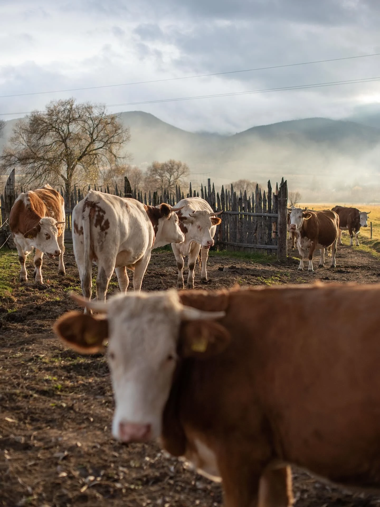
Név szerint jönnek fejésre
A tehenek hajnalban bejönnek, kapnak egy kis darát, és közben megtörténik a fejés. Közben a rézüst már melegszik. Este 5-kor ugyanez újra.
Érlelt sajt · GyergyóújfaluA Bányász család gazdaságából, a saját teheneink tejéből, türelemmel érlelve.
A mi történetünk
A Bányász család 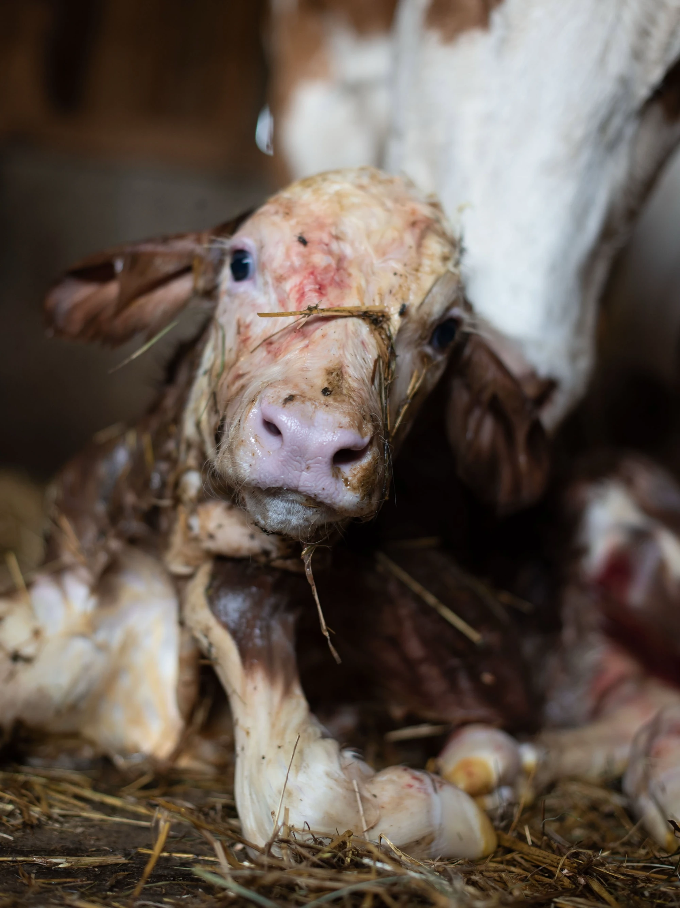 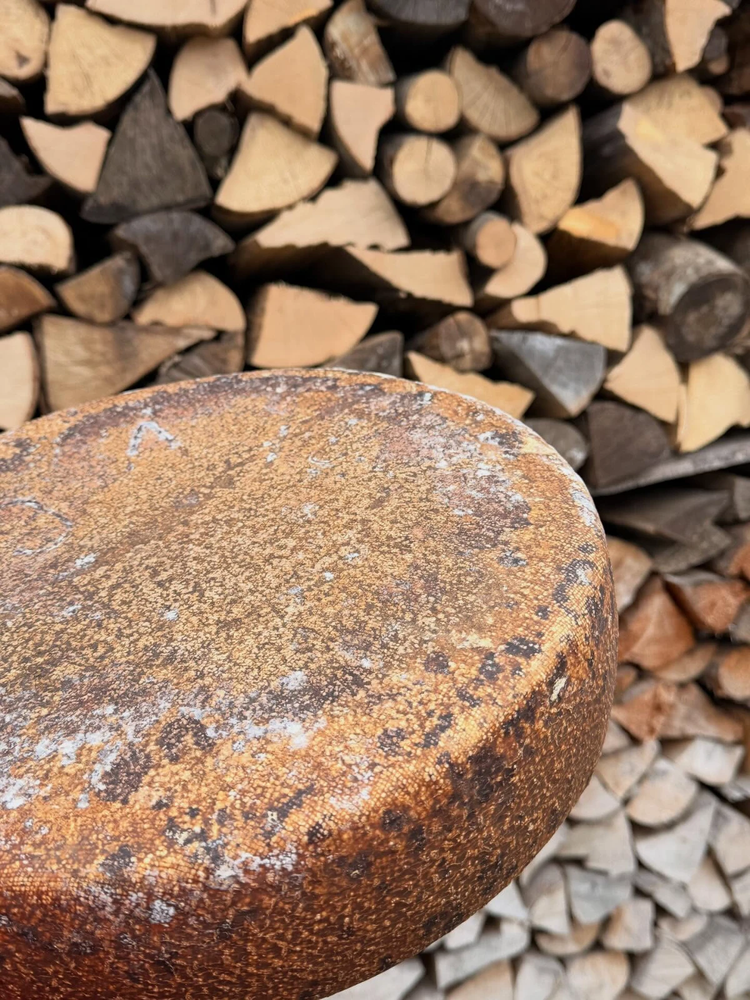
Édesapánk, Bányász József a Caritas igazgatója volt, amikor 48 évesen úgy döntött, hogy visszatér a gyökereihez. Parasztnak született, és ide, Gyergyóújfalu szélére hozta vissza ezt az életformát.
Ma együtt visszük: András agrármérnökként a gazdaságot és a sajtműhelyt, édesanyánk az egyensúlyt, Anna pedig fotósként a képeket. Mintagazdaságot építünk, ami megmutatja, hogy természetközeli, jó minőségű termékből meg lehet élni.
Kaszálás, fejés, borjazás, várakozás. A gazdaság mindennapjai, ahogy Anna, a lányunk fényképezőgépe látja.

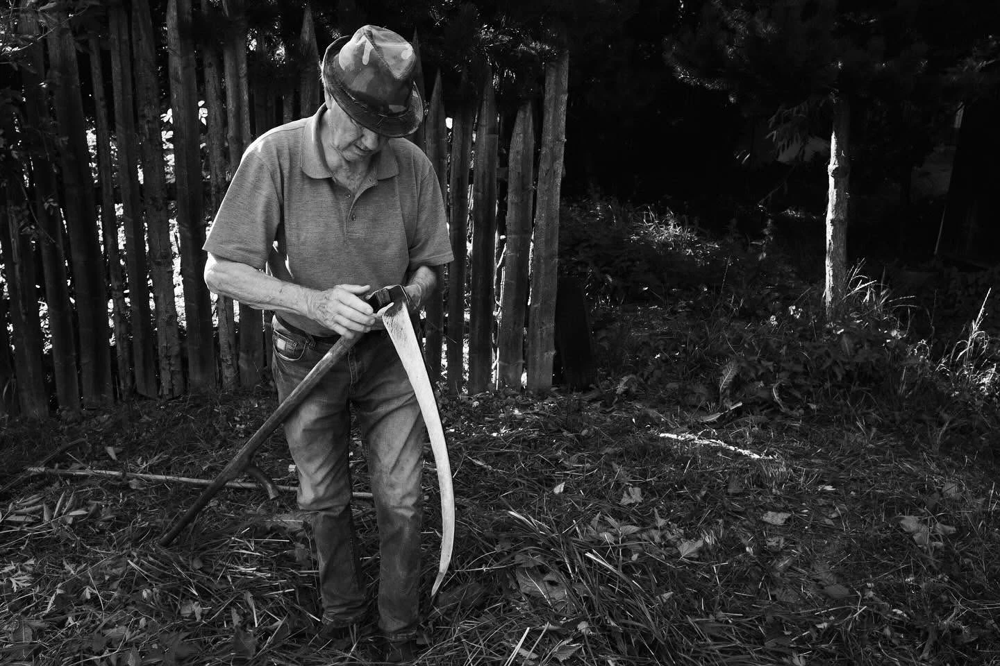

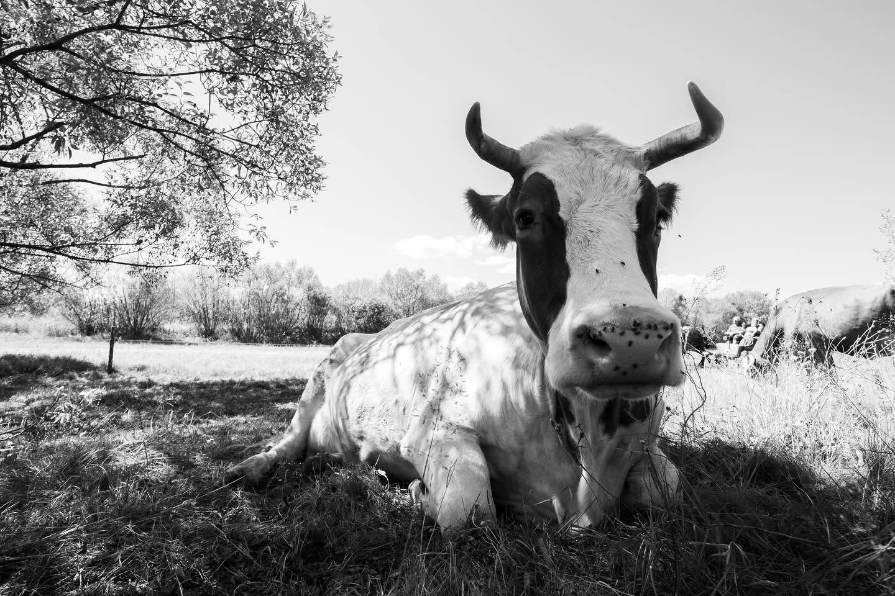
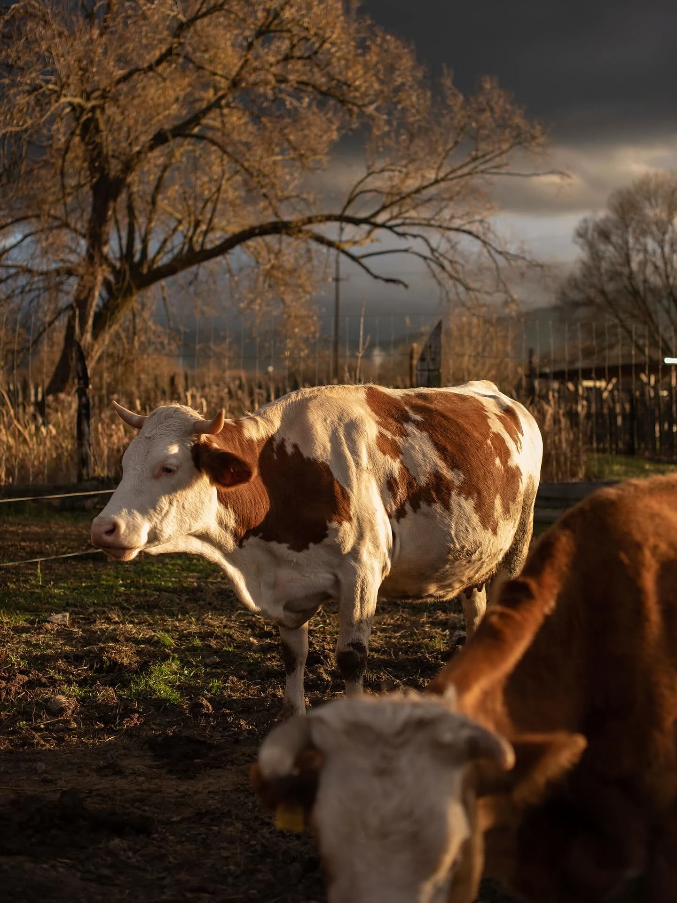
„A sajt a tej elrugaszkodása a halhatatlanság irányába.”Bányász József
Édesapánk a fejések között ír: a munkáról, a jószágról, a paraszti kultúráról és arról, mit jelent ma természetközelben élni. Ide kerülnek az írásai.
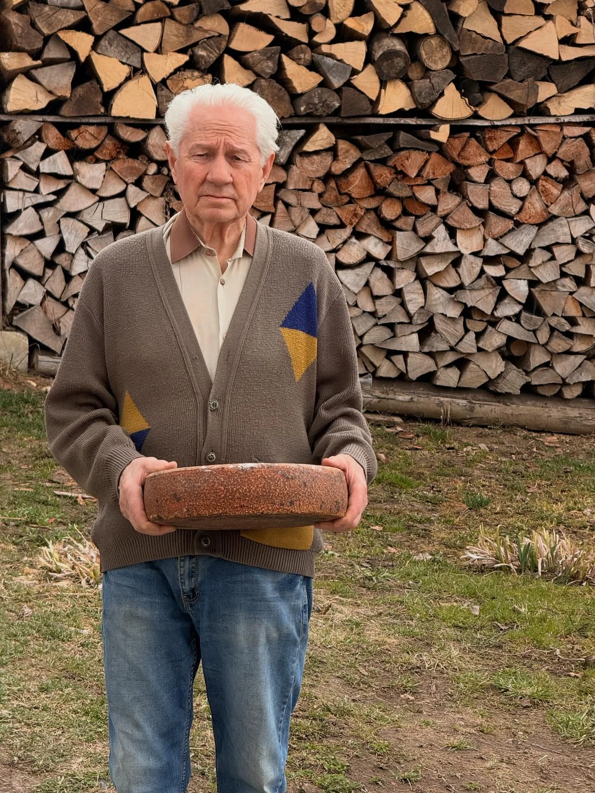
01Miért várunk három évet egy kerékre, amikor három hónap után is el lehetne adni? A türelemről, az időről és arról, amit a sajt megőriz.
Elolvasom →02Az életszínvonalat pénzért vesszük, az életminőséget nem. Gondolatok arról, hogyan lehet szerényebben, mégis teljesebben élni.
Elolvasom →03Bogi tizennyolc éves, és még mindig ő a legokosabb az istállóban. Arról, hogy a jószág nem eszköz, hanem munkatárs.
Elolvasom →Görgess végig, és nézd, ahogy a reggeli tejből érett kerék lesz. Az idő nálunk is hozzávaló.

A tehenek hajnalban bejönnek, kapnak egy kis darát, és közben megtörténik a fejés. Közben a rézüst már melegszik. Este 5-kor ugyanez újra.
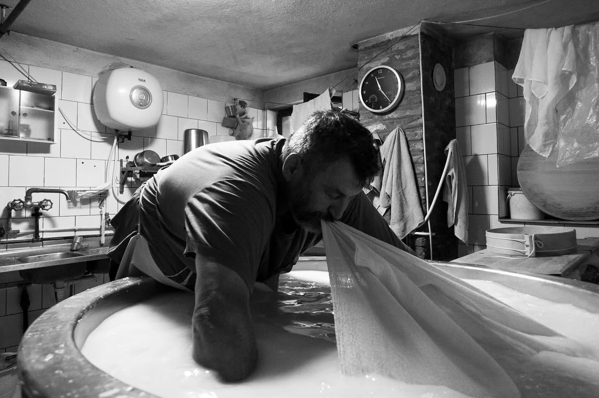
A leszűrt, nyers tejbe 25 fokon kerül a kultúra, 33 fokon az oltó. Fél óra alatt megalszik, akkor hárfával kukoricaszemnyire vágjuk, és 46 fokig melegítjük.
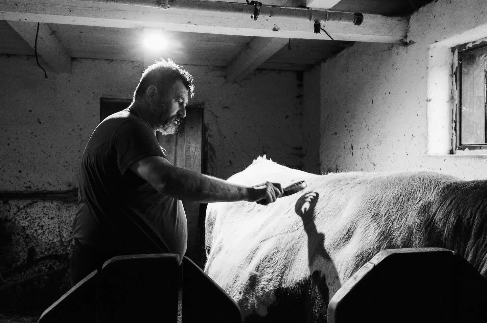
A sajtot kendővel szedjük formába, ahol 24 órát pihen. Utána 48 órára sós vízbe kerül, és csak azután megy a pincébe.
Minden kereket kétnaponta leveszünk, átforgatunk és kefével átmosunk. Az idősebbekről a fiatalabbakra visszük át a baktériumos vizet. Egy kerék 15–20 kiló.
Van három hónapos, fél éves, egyéves, és van három éves is. Két évig is érlelhetnénk, de szerencsére előbb elfogy.
Tedd kosárba, amit szeretnél, mi félretesszük. Visszaírunk, mikor veheted át, vagy mikor küldjük futárral.
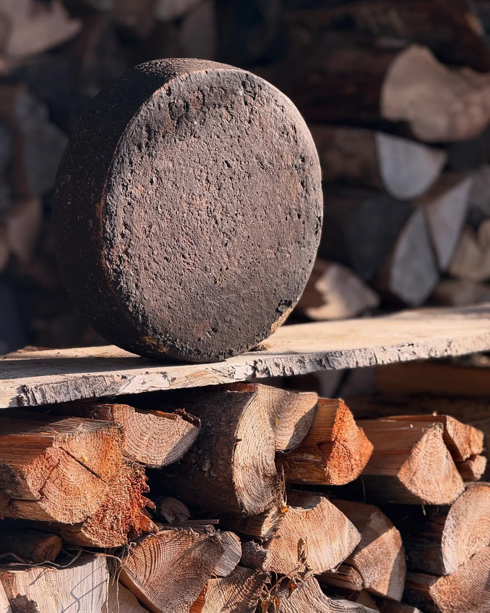
Lágyabb, tejes, krémes. Aki most ismerkedik a nyers tejes sajttal, ezzel kezdje.
Már karakteres, enyhén diós. Reggelihez, borhoz, sajttálra egyaránt jó.
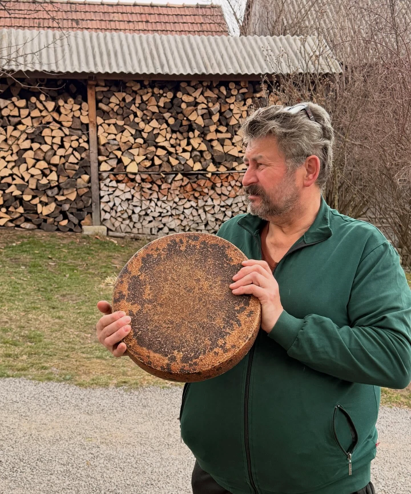
Mély, összetett íz, amiből kiérezni a helyet. Séfek is ezt viszik.
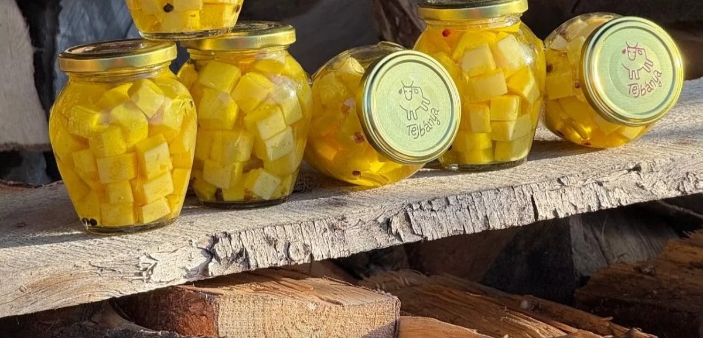
Érlelt sajtkockák curryvel, üvegben. Ajándéknak is jó.
Az aktuális árat és a kapható kerekeket rendeléskor visszaigazoljuk. Később ugyanerre a felületre kerülhet az online fizetés is, így ebből lesz a webshop.
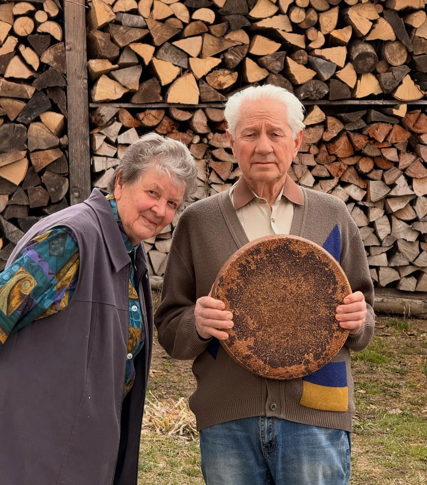
Bejelentkezéssel szívesen megmutatjuk a gazdaságot, a teheneket és a sajtpincét. A kóstolóhoz falusi espresso jár: helyi teafű, egy csepp kávé, és egy jó beszélgetés.
Robival együtt egy egész napot töltöttek a gazdaságban: megismerték Bogit, a legidősebb tehenünket, végignézték a sajtkészítést, és megkóstolták a három hónapostól az egyévesig.
„Tiszta eredetiség, tiszta gazdálkodás, mély gondolatok, finom sajtok!”Gyimesi Skanzen
„A házigazdák nemcsak kiváló sajtokat kínálnak, hanem szellemi táplálékkal is megajándékozzák a betérőket.”Lutz Levente
„Sajtfilozófia: egységben Istennel és a természettel. Szívből ajánlom a sajtokat és a gazdát, Bányász Józsefet!”Gergely Osadcow
Egy perc az egész. Visszaírunk vagy felhívunk, és megbeszéljük az átvételt.